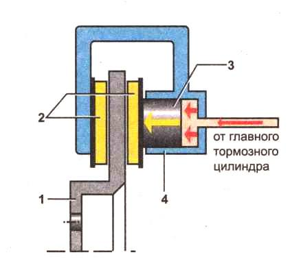

Принцип работы дисковых тормозов
Дисковый тормозной механизм, как и любой другой тормоз, предназначен для изменения скорости движения автомобиля.
Тормозной механизм с плавающей скобой:

- тормозной диск
- тормозные колодки
- поршень
- рабочий тормозной цилиндр (суппорт)
Пошаговая схема работы дисковых тормозов:
- При нажатии водителем на педаль тормоза, ГТЦ создает давление в тормозных трубках.
- Для механизма с фиксированной скобой: давление жидкости воздействует на поршни рабочих тормозных цилиндров с обоих сторон тормозного диска, которые, в свою очередь, прижимают к нему колодки. Для механизма с плавающей скобой: давление жидкости воздействует на поршень и корпус суппорта одновременно, заставляя последний перемещаться и прижимать колодку к диску с другой стороны.
- Диск, зажатый между двумя колодками, уменьшает скорость за счет силы трения. А это, в свою очередь, приводит к торможению автомобиля.
- После того, как водитель отпустит педаль тормоза, давление пропадает. Поршень возвращается в исходное положение за счет упругих свойств уплотнительной манжеты, а колодки отводятся с помощью небольшой вибрации диска в процессе движения.